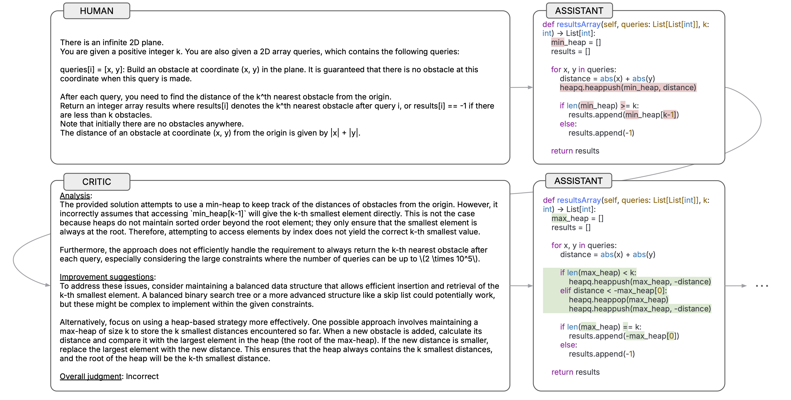
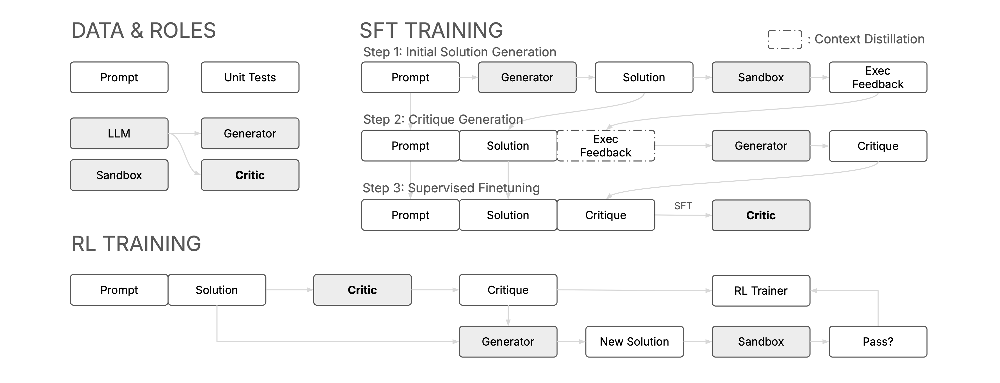
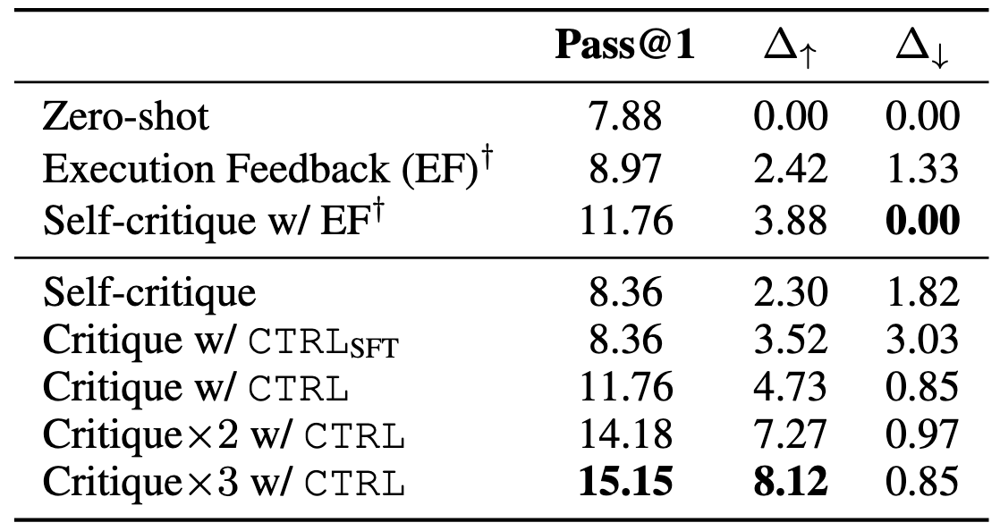
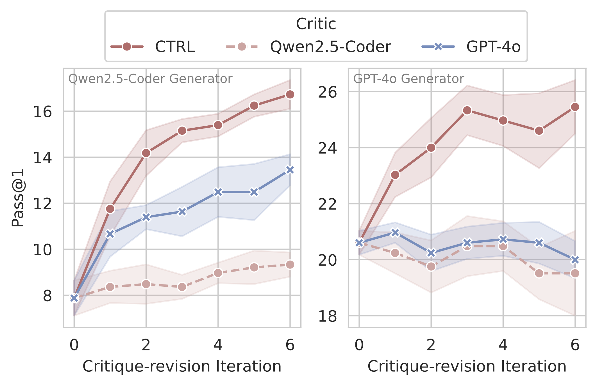
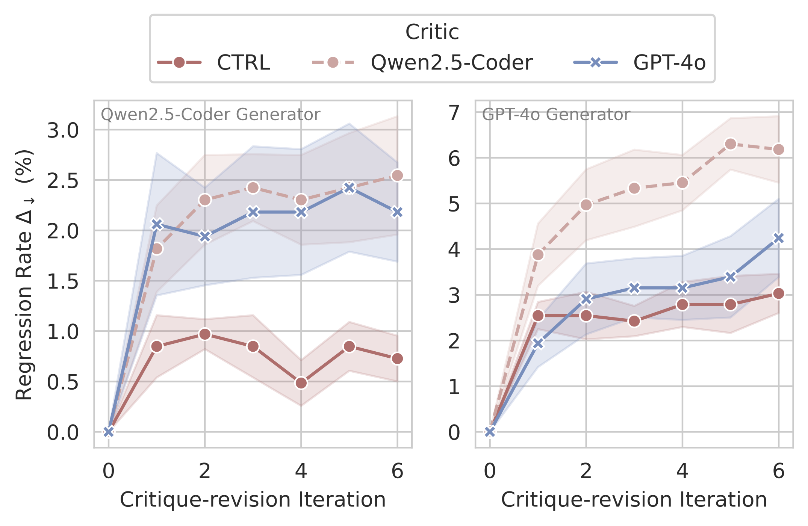
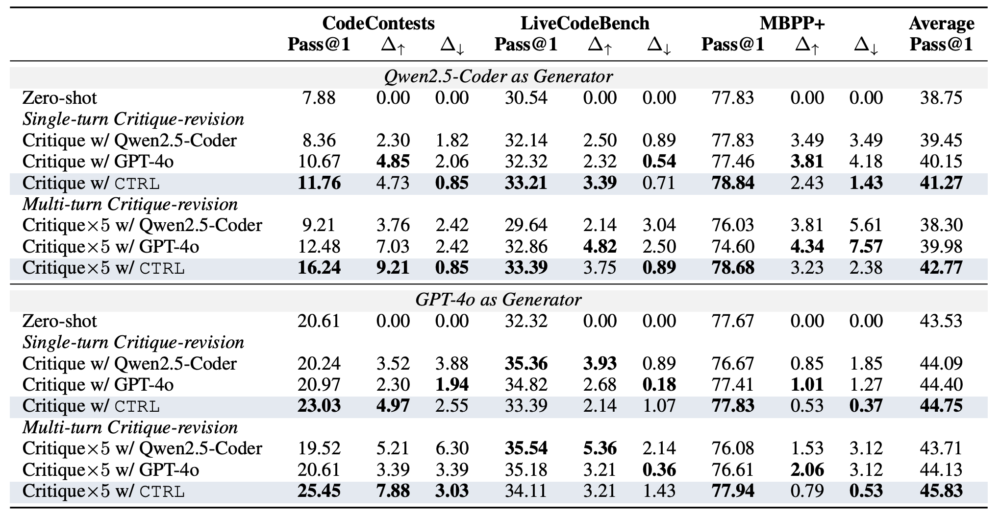
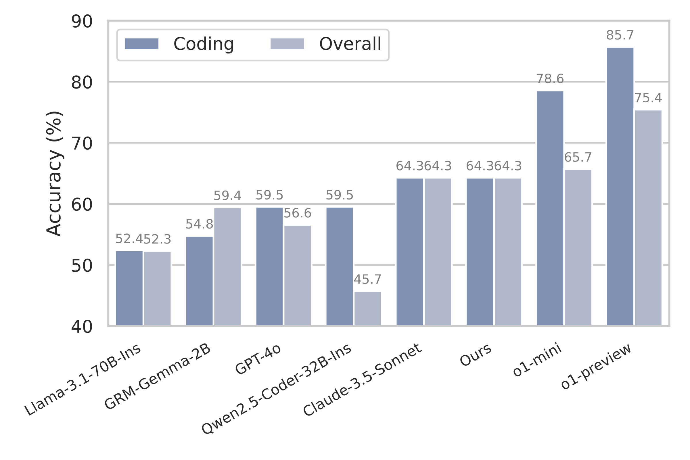

We propose CTRL, a framework that trains LLMs to critique without human supervision, enabling them to supervise stronger models and achieve test-time scaling through iterative critique-revisions.

CTRL critics demonstrate two fundamental capabilities: (1) critiquing - providing iterative refinement through structured technical feedback and targeted improvement suggestions, and (2) discrimination - serving as generative reward models to evaluate and compare solution correctness.
CTRL Framework
The CTRL framework is designed as a two-stage pipeline to train critic models for providing actionable feedback
and guiding iterative refinement.
Stage I: We develop an execution-guided critique synthesis approach that leverages
the model's reasoning ability over execution feedback to understand why solutions fail or succeed. Through supervised fine-tuning, the model learns to generate informative critiques that identify key issues and suggest improvements.
Stage II: We optimize critique generation through Group Relative Policy Optimization (GRPO) to maximize the probability of obtaining a correct solution after revision. GRPO reduces variance by computing group-based relative advantages and naturally focuses training on problems where high-quality critiques can drive meaningful improvements.

Key Findings
Feedback Quality Matters for Iterative Refinement
Our analysis reveals that: (1) models struggle with self-critique and raw execution feedback alone, (2) reasoning over execution feedback helps generate more accurate critiques, which grounds our execution-guided synthesis approach, and (3) trained CTRL critics achieve substantially better results by generating more accurate and targeted feedback.

Performance on CodeContests (Pass@1 %, Δ↑: incorrect→correct, Δ↓: correct→incorrect) using Qwen2.5-Coder-32B-Ins.
×k indicates k critique-revision iterations. †Using unit tests for generation.
CTRL Critics Enable Test-time Scaling
Despite training only on single-turn critiquing tasks, CTRL generalizes well to multi-turn critique-revision scenarios. We observe one main advantage of CTRL is that it mitigates compounding errors by maintaining low incorrect→correct rates across iterations, while baseline models like Qwen2.5-Coder-32B-Ins and GPT-4o suffer from compounding errors during multiple revision rounds.

Pass@1 improves substantially after multi-turn iterations with CTRL critics.

CTRL maintains lower incorrect→correct rates across iterations compared to baselines.
CTRL Critics Generalize Across Tasks and Models
When paired with its base model (Qwen2.5-Coder-32B-Ins), CTRL achieves a 106.1% relative improvement in Pass@1 on CodeContests through multi-turn critique-revision. The critic maintains its effectiveness when integrated with GPT-4o, improving Pass@1 by 23.5%.

CTRL consistently improves performance across different code generation tasks: CodeContests, LiveCodeBench (24.08-24.11), MBPP+; and generator models: Qwen2.5-Coder, GPT-4o.
CTRL Critics Are Accurate Generative Reward Models
Our critics achieve competitive performance as generative reward models, even when evaluating outputs from more capable models and generalizing beyond coding tasks. On JudgeBench, CTRL maintains comparable overall accuracy (64.3%) to stronger models like Claude-3.5-Sonnet while excelling in coding-specific evaluations. This demonstrates that unifying textual feedback enables our critics to balance discrimination and critiquing abilities effectively.

Performance comparison on JudgeBench benchmark.